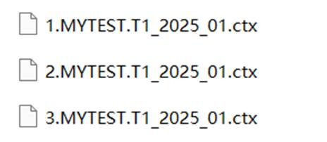

1. The directory containing files of this external library is: installation directory\esProc\extlib\HiveCli. White spaces are not allowed in the path. A path like D:\Program Files\raqsoft\esProc\extlib\HiveCli is wrong. The Raqsoft core jar for this external library is scu-hivecli-3.1.2.jar.
antlr-runtime-3.5.2.jar
antlr4-runtime-4.5.jar
calcite-core-1.16.0.jar
calcite-druid-1.16.0.jar
calcite-linq4j-1.16.0.jar
commons-beanutils-1.9.3.jar
commons-cli-1.2.jar
commons-codec-1.7.jar
commons-collections-3.2.2.jar
commons-collections4-4.1.jar
commons-compiler-2.7.6.jar
commons-compress-1.9.jar
commons-configuration2-2.1.1.jar
commons-io-2.4.jar
commons-compress-1.9.jar
commons-logging-1.0.4.jar
commons-math3-3.6.1.jar
hadoop-auth-3.2.0.jar
hadoop-common-3.2.0.jar
hadoop-hdfs-3.2.0.jar
hadoop-mapreduce-client-core-3.2.0.jar
hadoop-mapreduce-client-jobclient-3.2.0.jar
hadoop-mapreduce-client-common-3.2.0.jar
hadoop-mapreduce-client-shuffle-3.2.0.jar
hadoop-yarn-api-3.2.0.jar
hadoop-yarn-client-3.2.0.jar
hadoop-yarn-common-3.2.0.jar
hamcrest-core-1.3.jar
hbase-annotations-1.2.6.jar
hbase-common-1.2.6.jar
hive-cli-3.1.2.jar
hive-common-3.1.2.jar
hive-exec-3.1.2.jar
hive-jdbc-3.1.2.jar
hive-metastore-3.1.2.jar
htrace-core4-4.2.0-incubating.jar
jackson-core-2.9.5.jar
jline-2.12.jar
libfb303-0.9.3.jar
log4j-1.2-api-2.10.0.jar
log4j-api-2.10.0.jar
log4j-core-2.10.0.jar
log4j-slf4j-impl-2.10.0.jar
re2j-1.1.jar
servlet-api-2.5.jar
slf4j-api-1.7.28.jar
stax2-api-3.1.4.jar
woodstox-core-5.0.3.jar
Note: The third-party jars are provided within the package and users can choose appropriate ones for specific scenarios.
2. Download the following four files from the web and place them in installation directory\bin:
hadoop.dll
hadoop.lib
libwinutils.lib
winutils.exe
Note: The above files are required under Windows environment, but not under Linux. There are x86 winutils.exe and x64 winutils.exe depending on different OS versions.
3. HiveCli requires a JRE version 1.7 or above. Users need to install a higher version if the esProc built-in JRE version does not meet the requirements, and then configure java_home in config.txt under installation directory\esProc\bin. Just ignore this step if the JRE version is adequate.
4. Users can manually change the size of memory if the default size isn’t large enough for needs. Two ways to manage memory under Windows are available: Change the memory settings in config.txt when starting esProc through the executable file; and in the .bat file when starting the application through the batch file. Under Linux, change the memory size in the .sh file.
Below is the method of changing memory settings in config.txt under Windows:
java_home=C:\ProgramFiles\Java\JDK1.7.0_11;esproc_port=48773;jvm_args=-Xms256m -XX:PermSize=256M -XX:MaxPermSize=512M -Xmx9783m -Duser.language=zh
5. On the machine where esProc is installed, find the hosts file to add the IP address and hostname of the machine holding the Hive warehouse. For example, if the IP address and hostname are 192.168.0.8 and masters respectively, here are the settings:

6. esProc provides a number of external library functions, including hive_client(), hive_query(), hive_cursor(), and so on to access Hive databases. Look them up in【Help】-【Function reference】to find the uses.